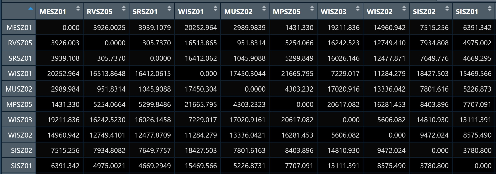
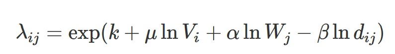
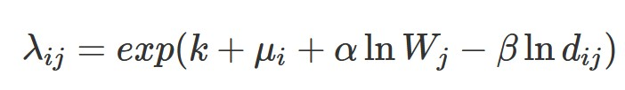

pacman::p_load(tmap, sf, sp, DT, stplanr,
performance, reshape2,
ggpubr, units, tidyverse)In-class Exercise 3
1.1 Overview
Spatial Interaction Models (SIMs) are mathematical models for estimating flows between spatial entities developed by Alan Wilson in the late 1960s and early 1970, with considerable uptake and refinement for transport modelling since then Boyce and Williams (2015).
There are four main types of traditional SIMs (Wilson 1971):
Unconstrained
Production-constrained
Attraction-constrained
Doubly-constrained
Ordinary least square (OLS), log-normal, Poisson and negative binomial (NB) regression methods have been used extensively to calibrate OD flow models by processing flow data as different types of dependent variables. In this chapter, you will gain hands-on experiences on using appropriate R packages to calibrate SIM by using there four regression methods.
1.2 The Case Study and Data
In this exercise, we are going to calibrate SIM to determine factors affecting the public bus passenger flows during the morning peak in Singapore.
1.3 Getting Started
For the purpose of this exercise, four r packages will be used. They are:
sf for importing, integrating, processing and transforming geospatial data.
tidyverse for importing, integrating, wrangling and visualising data.
tmap for creating thematic maps.
1.4 The Data
This exercise is a continuation of Hands-on Exercise 3: Processing and Visualising Flow Data and the following data will be used:
od_data.rds, weekday morning peak passenger flows at planning subzone level.
mpsz.rds, URA Master Plan 2019 Planning Subzone boundary in simple feature tibble data frame format.
Beside these two data sets, an additional attribute data file called pop.csv will be provided.
1.5 Computing Distance Matrix
In spatial interaction, a distance matrix is a table that shows the distance between pairs of locations. For example, in the table below we can see an Euclidean distance of 3926.0025 between MESZ01 and RVSZ05, of 3939.1079 between MESZ01 and SRSZ01, and so on. By definition, an location's distance from itself, which is shown in the main diagonal of the table, is 0.

In this section, you will learn how to compute a distance matrix by using URA Master Plan 2019 Planning Subzone boundary in which you saved as an rds file called mpsz.
First, let us import mpsz.rds into R environemnt by using the code chunk below.
mpsz <- read_rds("data/rds/mpsz.rds")
mpszSimple feature collection with 332 features and 6 fields
Geometry type: MULTIPOLYGON
Dimension: XY
Bounding box: xmin: 2667.538 ymin: 15748.72 xmax: 56396.44 ymax: 50256.33
Projected CRS: SVY21 / Singapore TM
First 10 features:
SUBZONE_N SUBZONE_C PLN_AREA_N PLN_AREA_C REGION_N
1 MARINA EAST MESZ01 MARINA EAST ME CENTRAL REGION
2 INSTITUTION HILL RVSZ05 RIVER VALLEY RV CENTRAL REGION
3 ROBERTSON QUAY SRSZ01 SINGAPORE RIVER SR CENTRAL REGION
4 JURONG ISLAND AND BUKOM WISZ01 WESTERN ISLANDS WI WEST REGION
5 FORT CANNING MUSZ02 MUSEUM MU CENTRAL REGION
6 MARINA EAST (MP) MPSZ05 MARINE PARADE MP CENTRAL REGION
7 SUDONG WISZ03 WESTERN ISLANDS WI WEST REGION
8 SEMAKAU WISZ02 WESTERN ISLANDS WI WEST REGION
9 SOUTHERN GROUP SISZ02 SOUTHERN ISLANDS SI CENTRAL REGION
10 SENTOSA SISZ01 SOUTHERN ISLANDS SI CENTRAL REGION
REGION_C geometry
1 CR MULTIPOLYGON (((33222.98 29...
2 CR MULTIPOLYGON (((28481.45 30...
3 CR MULTIPOLYGON (((28087.34 30...
4 WR MULTIPOLYGON (((14557.7 304...
5 CR MULTIPOLYGON (((29542.53 31...
6 CR MULTIPOLYGON (((35279.55 30...
7 WR MULTIPOLYGON (((15772.59 21...
8 WR MULTIPOLYGON (((19843.41 21...
9 CR MULTIPOLYGON (((30870.53 22...
10 CR MULTIPOLYGON (((26879.04 26...Notice that it is a sf tibble dataframe object class.
1.5.1 Converting from sf data.table to SpatialPolygonsDataFrame
There are at least two ways to compute the required distance matrix. One is based on sf and the other is based on sp. Past experience shown that computing distance matrix by using sf function took relatively longer time that sp method especially the data set is large. In view of this, sp method is used in the code chunks below.
First as.Spatial() will be used to convert mpsz from sf tibble data frame to SpatialPolygonsDataFrame of sp object as shown in the code chunk below.
mpsz_sp <- as(mpsz, "Spatial")
mpsz_spclass : SpatialPolygonsDataFrame
features : 332
extent : 2667.538, 56396.44, 15748.72, 50256.33 (xmin, xmax, ymin, ymax)
crs : +proj=tmerc +lat_0=1.36666666666667 +lon_0=103.833333333333 +k=1 +x_0=28001.642 +y_0=38744.572 +ellps=WGS84 +towgs84=0,0,0,0,0,0,0 +units=m +no_defs
variables : 6
names : SUBZONE_N, SUBZONE_C, PLN_AREA_N, PLN_AREA_C, REGION_N, REGION_C
min values : ADMIRALTY, AMSZ01, ANG MO KIO, AM, CENTRAL REGION, CR
max values : YUNNAN, YSSZ09, YISHUN, YS, WEST REGION, WR 1.5.2 Computing the distance matrix
Next, spDists() of sp package will be used to compute the Euclidean distance between the centroids of the planning subzones.
dist <- spDists(mpsz_sp,
longlat = FALSE)
head(dist, n=c(10, 10)) [,1] [,2] [,3] [,4] [,5] [,6] [,7]
[1,] 0.000 3926.0025 3939.108 20252.964 2989.9839 1431.330 19211.836
[2,] 3926.003 0.0000 305.737 16513.865 951.8314 5254.066 16242.523
[3,] 3939.108 305.7370 0.000 16412.062 1045.9088 5299.849 16026.146
[4,] 20252.964 16513.8648 16412.062 0.000 17450.3044 21665.795 7229.017
[5,] 2989.984 951.8314 1045.909 17450.304 0.0000 4303.232 17020.916
[6,] 1431.330 5254.0664 5299.849 21665.795 4303.2323 0.000 20617.082
[7,] 19211.836 16242.5230 16026.146 7229.017 17020.9161 20617.082 0.000
[8,] 14960.942 12749.4101 12477.871 11284.279 13336.0421 16281.453 5606.082
[9,] 7515.256 7934.8082 7649.776 18427.503 7801.6163 8403.896 14810.930
[10,] 6391.342 4975.0021 4669.295 15469.566 5226.8731 7707.091 13111.391
[,8] [,9] [,10]
[1,] 14960.942 7515.256 6391.342
[2,] 12749.410 7934.808 4975.002
[3,] 12477.871 7649.776 4669.295
[4,] 11284.279 18427.503 15469.566
[5,] 13336.042 7801.616 5226.873
[6,] 16281.453 8403.896 7707.091
[7,] 5606.082 14810.930 13111.391
[8,] 0.000 9472.024 8575.490
[9,] 9472.024 0.000 3780.800
[10,] 8575.490 3780.800 0.000Notice that the output dist is a matrix object class of R. Also notice that the column heanders and row headers are not labeled with the planning subzone codes.
1.5.3 Labelling column and row heanders of a distance matrix
First, we will create a list sorted according to the the distance matrix by planning sub-zone code.
sz_names <- mpsz$SUBZONE_CNext we will attach SUBZONE_C to row and column for distance matrix matching ahead.
colnames(dist) <- paste0(sz_names)
rownames(dist) <- paste0(sz_names)1.5.4 Pivoting distance value by SUBZONE_C
Next, we will pivot the distance matrix into a long table by using the row and column subzone codes as show in the code chunk below.
distPair <- melt(dist) %>%
rename(dist = value)
head(distPair, 10) Var1 Var2 dist
1 MESZ01 MESZ01 0.000
2 RVSZ05 MESZ01 3926.003
3 SRSZ01 MESZ01 3939.108
4 WISZ01 MESZ01 20252.964
5 MUSZ02 MESZ01 2989.984
6 MPSZ05 MESZ01 1431.330
7 WISZ03 MESZ01 19211.836
8 WISZ02 MESZ01 14960.942
9 SISZ02 MESZ01 7515.256
10 SISZ01 MESZ01 6391.342Notice that the within zone distance is 0.
1.5.5 Updating intra-zonal distances
In this section, we are going to append a constant value to replace the intra-zonal distance of 0.
First, we will select and find out the minimum value of the distance by using summary().
distPair %>%
filter(dist > 0) %>%
summary() Var1 Var2 dist
MESZ01 : 331 MESZ01 : 331 Min. : 173.8
RVSZ05 : 331 RVSZ05 : 331 1st Qu.: 7149.5
SRSZ01 : 331 SRSZ01 : 331 Median :11890.0
WISZ01 : 331 WISZ01 : 331 Mean :12229.4
MUSZ02 : 331 MUSZ02 : 331 3rd Qu.:16401.7
MPSZ05 : 331 MPSZ05 : 331 Max. :49894.4
(Other):107906 (Other):107906 The code chunk below will be used to check the result data.frame.
distPair %>%
summary() Var1 Var2 dist
MESZ01 : 332 MESZ01 : 332 Min. : 0
RVSZ05 : 332 RVSZ05 : 332 1st Qu.: 7097
SRSZ01 : 332 SRSZ01 : 332 Median :11864
WISZ01 : 332 WISZ01 : 332 Mean :12193
MUSZ02 : 332 MUSZ02 : 332 3rd Qu.:16388
MPSZ05 : 332 MPSZ05 : 332 Max. :49894
(Other):108232 (Other):108232 The code chunk below is used to rename the origin and destination fields.
distPair <- distPair %>%
rename(orig = Var1,
dest = Var2)Lastly, the code chunk below is used to save the dataframe for future use.
write_rds(distPair, "data/rds/distPair.rds") 1.6 Preparing flow data
The code chunk below is used import od_data save in Hands-on Exercise 3 into R environment.
od_data <- read_rds("data/rds/od_data.rds")Next, we will compute the total passenger trip between and within planning subzones by using the code chunk below. The output is all flow_data.
flow_data <- od_data %>%
group_by(ORIGIN_SZ, DESTIN_SZ) %>%
summarize(TRIPS = sum(MORNING_PEAK)) Use the code chunk below to display flow_data dataframe.
head(flow_data, 10)# A tibble: 10 × 3
# Groups: ORIGIN_SZ [1]
ORIGIN_SZ DESTIN_SZ TRIPS
<chr> <chr> <dbl>
1 AMSZ01 AMSZ01 2694
2 AMSZ01 AMSZ02 10591
3 AMSZ01 AMSZ03 14980
4 AMSZ01 AMSZ04 3106
5 AMSZ01 AMSZ05 7734
6 AMSZ01 AMSZ06 2306
7 AMSZ01 AMSZ07 1824
8 AMSZ01 AMSZ08 2734
9 AMSZ01 AMSZ09 2300
10 AMSZ01 AMSZ10 1641.6.1 Separating intra-flow from passenger volume df
Code chunk below is used to add three new fields in flow_data dataframe.
flow_data$FlowNoIntra <- ifelse(
flow_data$ORIGIN_SZ == flow_data$DESTIN_SZ,
0, flow_data$TRIPS)
flow_data$offset <- ifelse(
flow_data$ORIGIN_SZ == flow_data$DESTIN_SZ,
0.000001, 1)1.6.2 Combining passenger volume data with distance value
Before we can join flow_data and distPair, we need to convert data value type of ORIGIN_SZ and DESTIN_SZ fields of flow_data dataframe into factor data type.
flow_data$ORIGIN_SZ <- as.factor(flow_data$ORIGIN_SZ)
flow_data$DESTIN_SZ <- as.factor(flow_data$DESTIN_SZ)Now, left_join() of dplyr will be used to flow_data dataframe and distPair dataframe. The output is called flow_data1.
flow_data1 <- flow_data %>%
left_join (distPair,
by = c("ORIGIN_SZ" = "orig",
"DESTIN_SZ" = "dest"))1.7 Preparing Origin and Destination Attributes
1.7.1 Importing population data
pop <- read_csv("data/aspatial/pop.csv")1.7.2 Geospatial data wrangling
pop <- pop %>%
left_join(mpsz,
by = c("PA" = "PLN_AREA_N",
"SZ" = "SUBZONE_N")) %>%
select(1:6) %>%
rename(SZ_NAME = SZ,
SZ = SUBZONE_C)1.7.3 Preparing origin attribute
flow_data1 <- flow_data1 %>%
left_join(pop,
by = c(ORIGIN_SZ = "SZ")) %>%
rename(ORIGIN_AGE7_12 = AGE7_12,
ORIGIN_AGE13_24 = AGE13_24,
ORIGIN_AGE25_64 = AGE25_64) %>%
select(-c(PA, SZ_NAME))1.7.4 Preparing destination attribute
flow_data1 <- flow_data1 %>%
left_join(pop,
by = c(DESTIN_SZ = "SZ")) %>%
rename(DESTIN_AGE7_12 = AGE7_12,
DESTIN_AGE13_24 = AGE13_24,
DESTIN_AGE25_64 = AGE25_64) %>%
select(-c(PA, SZ_NAME))We will called the output data file SIM_data. it is in rds data file format.
write_rds(flow_data1, "data/rds/SIM_data")1.8 Calibrating Spatial Interaction Models
In this section, you will learn how to calibrate Spatial Interaction Models by using Poisson Regression method.
1.8.1 Importing the modelling data
Firstly, let us import the modelling data by using the code chunk below.
SIM_data <- read_rds("data/rds/SIM_data.rds")1.8.2 Visualising the dependent variable
Firstly, let us plot the distribution of the dependent variable (i.e. TRIPS) by using histogram method by using the code chunk below.
ggplot(data = SIM_data,
aes(x = TRIPS)) +
geom_histogram()
Notice that the distribution is highly skewed and not resemble bell shape or also known as normal distribution.
Next, let us visualise the relation between the dependent variable and one of the key independent variable in Spatial Interaction Model, namely distance.
ggplot(data = SIM_data,
aes(x = dist,
y = TRIPS)) +
geom_point() +
geom_smooth(method = lm)
Notice that their relationship hardly resemble linear relationship.
On the other hand, if we plot the scatter plot by using the log transformed version of both variables, we can see that their relationship is more resemble linear relationship.
ggplot(data = SIM_data,
aes(x = log(dist),
y = log(TRIPS))) +
geom_point() +
geom_smooth(method = lm)
1.8.3 Checking for variables with zero values
Since Poisson Regression is based of log and log 0 is undefined, it is important for us to ensure that no 0 values in the explanatory variables.
In the code chunk below, summary() of Base R is used to compute the summary statistics of all variables in SIM_data data frame.
summary(SIM_data) ORIGIN_SZ DESTIN_SZ TRIPS FlowNoIntra
Length:14274 Length:14274 Min. : 1.0 Min. : 1.0
Class :character Class :character 1st Qu.: 11.0 1st Qu.: 11.0
Mode :character Mode :character Median : 56.0 Median : 56.0
Mean : 664.3 Mean : 664.3
3rd Qu.: 296.0 3rd Qu.: 296.0
Max. :104167.0 Max. :104167.0
offset dist ORIGIN_AGE7_12 ORIGIN_AGE13_24 ORIGIN_AGE25_64
Min. :1 Min. : 173.8 Min. : 0 Min. : 0 Min. : 0
1st Qu.:1 1st Qu.: 3465.4 1st Qu.: 240 1st Qu.: 460 1st Qu.: 2210
Median :1 Median : 6121.0 Median : 710 Median : 1400 Median : 7030
Mean :1 Mean : 6951.8 Mean :1037 Mean : 2278 Mean :10536
3rd Qu.:1 3rd Qu.: 9725.1 3rd Qu.:1500 3rd Qu.: 3282 3rd Qu.:15830
Max. :1 Max. :26135.8 Max. :6340 Max. :16380 Max. :74610
DESTIN_AGE7_12 DESTIN_AGE13_24 DESTIN_AGE25_64
Min. : 0 Min. : 0 Min. : 0
1st Qu.: 250 1st Qu.: 460 1st Qu.: 2210
Median : 720 Median : 1430 Median : 7120
Mean :1040 Mean : 2305 Mean :10648
3rd Qu.:1500 3rd Qu.: 3290 3rd Qu.:15830
Max. :6340 Max. :16380 Max. :74610 The print report above reveals that variables ORIGIN_AGE7_12, ORIGIN_AGE13_24, ORIGIN_AGE25_64,DESTIN_AGE7_12, DESTIN_AGE13_24, DESTIN_AGE25_64 consist of 0 values.
In view of this, code chunk below will be used to replace zero values to 0.99.
SIM_data$DESTIN_AGE7_12 <- ifelse(
SIM_data$DESTIN_AGE7_12 == 0,
0.99, SIM_data$DESTIN_AGE7_12)
SIM_data$DESTIN_AGE13_24 <- ifelse(
SIM_data$DESTIN_AGE13_24 == 0,
0.99, SIM_data$DESTIN_AGE13_24)
SIM_data$DESTIN_AGE25_64 <- ifelse(
SIM_data$DESTIN_AGE25_64 == 0,
0.99, SIM_data$DESTIN_AGE25_64)
SIM_data$ORIGIN_AGE7_12 <- ifelse(
SIM_data$ORIGIN_AGE7_12 == 0,
0.99, SIM_data$ORIGIN_AGE7_12)
SIM_data$ORIGIN_AGE13_24 <- ifelse(
SIM_data$ORIGIN_AGE13_24 == 0,
0.99, SIM_data$ORIGIN_AGE13_24)
SIM_data$ORIGIN_AGE25_64 <- ifelse(
SIM_data$ORIGIN_AGE25_64 == 0,
0.99, SIM_data$ORIGIN_AGE25_64)You can run the summary() again.
summary(SIM_data) ORIGIN_SZ DESTIN_SZ TRIPS FlowNoIntra
Length:14274 Length:14274 Min. : 1.0 Min. : 1.0
Class :character Class :character 1st Qu.: 11.0 1st Qu.: 11.0
Mode :character Mode :character Median : 56.0 Median : 56.0
Mean : 664.3 Mean : 664.3
3rd Qu.: 296.0 3rd Qu.: 296.0
Max. :104167.0 Max. :104167.0
offset dist ORIGIN_AGE7_12 ORIGIN_AGE13_24
Min. :1 Min. : 173.8 Min. : 0.99 Min. : 0.99
1st Qu.:1 1st Qu.: 3465.4 1st Qu.: 240.00 1st Qu.: 460.00
Median :1 Median : 6121.0 Median : 710.00 Median : 1400.00
Mean :1 Mean : 6951.8 Mean :1036.73 Mean : 2278.59
3rd Qu.:1 3rd Qu.: 9725.1 3rd Qu.:1500.00 3rd Qu.: 3282.50
Max. :1 Max. :26135.8 Max. :6340.00 Max. :16380.00
ORIGIN_AGE25_64 DESTIN_AGE7_12 DESTIN_AGE13_24 DESTIN_AGE25_64
Min. : 0.99 Min. : 0.99 Min. : 0.99 Min. : 0.99
1st Qu.: 2210.00 1st Qu.: 250.00 1st Qu.: 460.00 1st Qu.: 2210.00
Median : 7030.00 Median : 720.00 Median : 1430.00 Median : 7120.00
Mean :10535.93 Mean :1039.98 Mean : 2305.33 Mean :10647.95
3rd Qu.:15830.00 3rd Qu.:1500.00 3rd Qu.: 3290.00 3rd Qu.:15830.00
Max. :74610.00 Max. :6340.00 Max. :16380.00 Max. :74610.00 Notice that all the 0 values have been replaced by 0.99.
1.8.4 Unconstrained Spatial Interaction Model
In this section, you will learn how to calibrate an unconstrained spatial interaction model by using glm() of Base Stats. The explanatory variables are origin population by different age cohort, destination population by different age cohort (i.e. ORIGIN_AGE25_64) and distance between origin and destination in km (i.e. dist).
The general formula of Unconstrained Spatial Interaction Model

The code chunk used to calibrate to model is shown below:
uncSIM <- glm(formula = TRIPS ~
log(ORIGIN_AGE25_64) +
log(DESTIN_AGE25_64) +
log(dist),
family = poisson(link = "log"),
data = SIM_data,
na.action = na.exclude)
uncSIM
Call: glm(formula = TRIPS ~ log(ORIGIN_AGE25_64) + log(DESTIN_AGE25_64) +
log(dist), family = poisson(link = "log"), data = SIM_data,
na.action = na.exclude)
Coefficients:
(Intercept) log(ORIGIN_AGE25_64) log(DESTIN_AGE25_64)
17.00287 0.21001 0.01289
log(dist)
-1.51785
Degrees of Freedom: 14273 Total (i.e. Null); 14270 Residual
Null Deviance: 36120000
Residual Deviance: 19960000 AIC: 200400001.8.5 R-squared function
In order to measure how much variation of the trips can be accounted by the model we will write a function to calculate R-Squared value as shown below.
CalcRSquared <- function(observed,estimated){
r <- cor(observed,estimated)
R2 <- r^2
R2
}Next, we will compute the R-squared of the unconstrained SIM by using the code chunk below.
CalcRSquared(uncSIM$data$TRIPS, uncSIM$fitted.values)[1] 0.1694734r2_mcfadden(uncSIM)# R2 for Generalized Linear Regression
R2: 0.446
adj. R2: 0.4461.8.6 Origin (Production) constrained SIM
In this section, we will fit an origin constrained SIM by using the code3 chunk below.
The general formula of Origin Constrained Spatial Interaction Model

orcSIM <- glm(formula = TRIPS ~
ORIGIN_SZ +
log(DESTIN_AGE25_64) +
log(dist),
family = poisson(link = "log"),
data = SIM_data,
na.action = na.exclude)
summary(orcSIM)
Call:
glm(formula = TRIPS ~ ORIGIN_SZ + log(DESTIN_AGE25_64) + log(dist),
family = poisson(link = "log"), data = SIM_data, na.action = na.exclude)
Coefficients:
Estimate Std. Error z value Pr(>|z|)
(Intercept) 19.9309957 0.0054015 3689.887 < 2e-16 ***
ORIGIN_SZAMSZ02 0.6805710 0.0052686 129.175 < 2e-16 ***
ORIGIN_SZAMSZ03 0.3597850 0.0054884 65.554 < 2e-16 ***
ORIGIN_SZAMSZ04 -0.1106566 0.0060027 -18.434 < 2e-16 ***
ORIGIN_SZAMSZ05 -0.3140561 0.0067998 -46.186 < 2e-16 ***
ORIGIN_SZAMSZ06 0.0634425 0.0060258 10.528 < 2e-16 ***
ORIGIN_SZAMSZ07 -1.1301580 0.0110298 -102.464 < 2e-16 ***
ORIGIN_SZAMSZ08 -0.6330394 0.0102949 -61.491 < 2e-16 ***
ORIGIN_SZAMSZ09 0.1064915 0.0063450 16.784 < 2e-16 ***
ORIGIN_SZAMSZ10 0.5061899 0.0053889 93.931 < 2e-16 ***
ORIGIN_SZAMSZ11 -1.3167911 0.0144870 -90.895 < 2e-16 ***
ORIGIN_SZAMSZ12 -1.5103004 0.0127453 -118.499 < 2e-16 ***
ORIGIN_SZBDSZ01 1.3626004 0.0051433 264.929 < 2e-16 ***
ORIGIN_SZBDSZ02 0.9554084 0.0059655 160.156 < 2e-16 ***
ORIGIN_SZBDSZ03 1.1476190 0.0054278 211.433 < 2e-16 ***
ORIGIN_SZBDSZ04 2.0110410 0.0046344 433.940 < 2e-16 ***
ORIGIN_SZBDSZ05 1.0658940 0.0053976 197.477 < 2e-16 ***
ORIGIN_SZBDSZ06 1.2719222 0.0054774 232.213 < 2e-16 ***
ORIGIN_SZBDSZ07 -0.5053039 0.0111553 -45.297 < 2e-16 ***
ORIGIN_SZBDSZ08 -0.3556193 0.0102947 -34.544 < 2e-16 ***
ORIGIN_SZBKSZ01 -0.3606399 0.0075473 -47.784 < 2e-16 ***
ORIGIN_SZBKSZ02 0.1357265 0.0061394 22.107 < 2e-16 ***
ORIGIN_SZBKSZ03 0.4101999 0.0058983 69.545 < 2e-16 ***
ORIGIN_SZBKSZ04 -0.3418645 0.0070764 -48.310 < 2e-16 ***
ORIGIN_SZBKSZ05 -0.2986750 0.0074073 -40.322 < 2e-16 ***
ORIGIN_SZBKSZ06 -0.2637855 0.0068739 -38.375 < 2e-16 ***
ORIGIN_SZBKSZ07 0.5498323 0.0051476 106.813 < 2e-16 ***
ORIGIN_SZBKSZ08 -0.0527393 0.0061457 -8.582 < 2e-16 ***
ORIGIN_SZBKSZ09 -0.1564691 0.0067300 -23.249 < 2e-16 ***
ORIGIN_SZBLSZ01 -1.7551329 0.0176599 -99.385 < 2e-16 ***
ORIGIN_SZBLSZ02 -1.9493637 0.0213859 -91.152 < 2e-16 ***
ORIGIN_SZBLSZ03 -2.9057732 0.0535995 -54.213 < 2e-16 ***
ORIGIN_SZBLSZ04 -1.4672066 0.0254726 -57.599 < 2e-16 ***
ORIGIN_SZBMSZ01 0.1806064 0.0060563 29.821 < 2e-16 ***
ORIGIN_SZBMSZ02 -1.4026549 0.0078244 -179.267 < 2e-16 ***
ORIGIN_SZBMSZ03 -0.5976236 0.0063808 -93.660 < 2e-16 ***
ORIGIN_SZBMSZ04 -0.5456513 0.0059061 -92.388 < 2e-16 ***
ORIGIN_SZBMSZ05 -3.1095195 0.0188118 -165.297 < 2e-16 ***
ORIGIN_SZBMSZ06 -3.0273827 0.0194319 -155.794 < 2e-16 ***
ORIGIN_SZBMSZ07 -0.7378197 0.0066865 -110.345 < 2e-16 ***
ORIGIN_SZBMSZ08 -0.9306150 0.0067188 -138.510 < 2e-16 ***
ORIGIN_SZBMSZ09 -1.4137345 0.0101071 -139.876 < 2e-16 ***
ORIGIN_SZBMSZ10 -1.7054195 0.0101582 -167.886 < 2e-16 ***
ORIGIN_SZBMSZ11 -1.2418380 0.0076792 -161.714 < 2e-16 ***
ORIGIN_SZBMSZ12 -1.3746537 0.0109769 -125.231 < 2e-16 ***
ORIGIN_SZBMSZ13 -0.4339494 0.0069335 -62.587 < 2e-16 ***
ORIGIN_SZBMSZ14 -0.9950458 0.0076302 -130.410 < 2e-16 ***
ORIGIN_SZBMSZ15 -0.6544196 0.0068964 -94.892 < 2e-16 ***
ORIGIN_SZBMSZ16 -1.5193747 0.0105329 -144.250 < 2e-16 ***
ORIGIN_SZBMSZ17 -1.6536771 0.0180672 -91.529 < 2e-16 ***
ORIGIN_SZBPSZ01 0.1484355 0.0064734 22.930 < 2e-16 ***
ORIGIN_SZBPSZ02 -0.3602094 0.0073902 -48.741 < 2e-16 ***
ORIGIN_SZBPSZ03 -0.1567975 0.0072226 -21.709 < 2e-16 ***
ORIGIN_SZBPSZ04 0.4504873 0.0058418 77.115 < 2e-16 ***
ORIGIN_SZBPSZ05 0.5028646 0.0053682 93.675 < 2e-16 ***
ORIGIN_SZBPSZ06 -1.0125668 0.0105638 -95.853 < 2e-16 ***
ORIGIN_SZBPSZ07 -0.3859065 0.0098561 -39.154 < 2e-16 ***
ORIGIN_SZBSSZ01 0.1488497 0.0065504 22.724 < 2e-16 ***
ORIGIN_SZBSSZ02 0.4269498 0.0055893 76.387 < 2e-16 ***
ORIGIN_SZBSSZ03 -0.2437385 0.0062020 -39.300 < 2e-16 ***
ORIGIN_SZBTSZ01 0.1987940 0.0066672 29.817 < 2e-16 ***
ORIGIN_SZBTSZ02 -0.4571546 0.0090784 -50.356 < 2e-16 ***
ORIGIN_SZBTSZ03 -0.2697243 0.0077941 -34.606 < 2e-16 ***
ORIGIN_SZBTSZ04 -1.0997236 0.0115225 -95.441 < 2e-16 ***
ORIGIN_SZBTSZ05 -1.0053122 0.0132594 -75.819 < 2e-16 ***
ORIGIN_SZBTSZ06 -1.0841201 0.0102242 -106.035 < 2e-16 ***
ORIGIN_SZBTSZ07 -2.3134497 0.0158499 -145.960 < 2e-16 ***
ORIGIN_SZBTSZ08 -1.1581618 0.0121161 -95.589 < 2e-16 ***
ORIGIN_SZCBSZ01 -1.0805930 0.0577831 -18.701 < 2e-16 ***
ORIGIN_SZCCSZ01 -0.8145372 0.0152638 -53.364 < 2e-16 ***
ORIGIN_SZCHSZ01 0.0377079 0.0133240 2.830 0.004654 **
ORIGIN_SZCHSZ02 -0.6209553 0.0096388 -64.422 < 2e-16 ***
ORIGIN_SZCHSZ03 1.6790244 0.0069559 241.381 < 2e-16 ***
ORIGIN_SZCKSZ01 0.0839586 0.0059934 14.008 < 2e-16 ***
ORIGIN_SZCKSZ02 0.4379511 0.0062289 70.309 < 2e-16 ***
ORIGIN_SZCKSZ03 0.7956950 0.0051892 153.335 < 2e-16 ***
ORIGIN_SZCKSZ04 1.2740323 0.0053165 239.637 < 2e-16 ***
ORIGIN_SZCKSZ05 0.9326213 0.0061807 150.893 < 2e-16 ***
ORIGIN_SZCKSZ06 0.3976273 0.0085639 46.431 < 2e-16 ***
ORIGIN_SZCLSZ01 -0.7522917 0.0094655 -79.477 < 2e-16 ***
ORIGIN_SZCLSZ02 -1.3937450 0.0153260 -90.940 < 2e-16 ***
ORIGIN_SZCLSZ03 -0.7898683 0.0091016 -86.784 < 2e-16 ***
ORIGIN_SZCLSZ04 0.8451512 0.0051258 164.882 < 2e-16 ***
ORIGIN_SZCLSZ05 -1.6573818 0.0166091 -99.788 < 2e-16 ***
ORIGIN_SZCLSZ06 0.9478181 0.0048182 196.716 < 2e-16 ***
ORIGIN_SZCLSZ07 -0.2499753 0.0064632 -38.677 < 2e-16 ***
ORIGIN_SZCLSZ08 0.1350119 0.0069296 19.483 < 2e-16 ***
ORIGIN_SZCLSZ09 -1.3868782 0.0192743 -71.955 < 2e-16 ***
ORIGIN_SZDTSZ02 -3.7535792 0.0871325 -43.079 < 2e-16 ***
ORIGIN_SZDTSZ03 -3.8462041 0.0840156 -45.780 < 2e-16 ***
ORIGIN_SZDTSZ13 -2.9738127 0.0349241 -85.151 < 2e-16 ***
ORIGIN_SZGLSZ01 -1.5175198 0.0110135 -137.787 < 2e-16 ***
ORIGIN_SZGLSZ02 0.2405712 0.0058742 40.954 < 2e-16 ***
ORIGIN_SZGLSZ03 0.1940241 0.0061989 31.300 < 2e-16 ***
ORIGIN_SZGLSZ04 1.0292572 0.0049028 209.931 < 2e-16 ***
ORIGIN_SZGLSZ05 0.9864552 0.0050898 193.811 < 2e-16 ***
ORIGIN_SZHGSZ01 0.3073609 0.0054307 56.597 < 2e-16 ***
ORIGIN_SZHGSZ02 0.3827293 0.0054555 70.154 < 2e-16 ***
ORIGIN_SZHGSZ03 0.2342580 0.0059240 39.544 < 2e-16 ***
ORIGIN_SZHGSZ04 0.8750090 0.0049639 176.275 < 2e-16 ***
ORIGIN_SZHGSZ05 1.1695280 0.0049468 236.420 < 2e-16 ***
ORIGIN_SZHGSZ06 -0.0462411 0.0063805 -7.247 4.25e-13 ***
ORIGIN_SZHGSZ07 0.4488583 0.0055139 81.404 < 2e-16 ***
ORIGIN_SZHGSZ08 0.2236095 0.0061279 36.490 < 2e-16 ***
ORIGIN_SZHGSZ09 -1.6376674 0.0084442 -193.941 < 2e-16 ***
ORIGIN_SZHGSZ10 -2.9849025 0.0501042 -59.574 < 2e-16 ***
ORIGIN_SZJESZ01 0.3926525 0.0056268 69.783 < 2e-16 ***
ORIGIN_SZJESZ02 0.1230160 0.0056864 21.633 < 2e-16 ***
ORIGIN_SZJESZ03 0.0188276 0.0061020 3.085 0.002032 **
ORIGIN_SZJESZ04 -1.3611618 0.0117184 -116.156 < 2e-16 ***
ORIGIN_SZJESZ05 -2.0643662 0.0157083 -131.419 < 2e-16 ***
ORIGIN_SZJESZ06 0.1556368 0.0055245 28.172 < 2e-16 ***
ORIGIN_SZJESZ07 -1.7664532 0.0133171 -132.646 < 2e-16 ***
ORIGIN_SZJESZ08 -0.9115981 0.0138203 -65.961 < 2e-16 ***
ORIGIN_SZJESZ09 0.6121916 0.0060381 101.388 < 2e-16 ***
ORIGIN_SZJESZ10 -1.1953045 0.0233216 -51.253 < 2e-16 ***
ORIGIN_SZJESZ11 -1.4088748 0.0220921 -63.773 < 2e-16 ***
ORIGIN_SZJWSZ01 0.5759093 0.0077741 74.081 < 2e-16 ***
ORIGIN_SZJWSZ02 0.9769314 0.0053029 184.227 < 2e-16 ***
ORIGIN_SZJWSZ03 1.3242695 0.0049068 269.882 < 2e-16 ***
ORIGIN_SZJWSZ04 0.5621088 0.0057831 97.199 < 2e-16 ***
ORIGIN_SZJWSZ05 -1.5744341 0.0146904 -107.174 < 2e-16 ***
ORIGIN_SZJWSZ06 -0.9113320 0.0126913 -71.807 < 2e-16 ***
ORIGIN_SZJWSZ07 -2.3083419 0.0357843 -64.507 < 2e-16 ***
ORIGIN_SZJWSZ08 2.0114225 0.0047956 419.429 < 2e-16 ***
ORIGIN_SZJWSZ09 1.9086705 0.0045255 421.759 < 2e-16 ***
ORIGIN_SZKLSZ01 0.2743166 0.0056908 48.204 < 2e-16 ***
ORIGIN_SZKLSZ02 -0.6443386 0.0074521 -86.463 < 2e-16 ***
ORIGIN_SZKLSZ03 -0.3990113 0.0067213 -59.366 < 2e-16 ***
ORIGIN_SZKLSZ04 -2.1413876 0.0138405 -154.719 < 2e-16 ***
ORIGIN_SZKLSZ05 -1.0913697 0.0121512 -89.816 < 2e-16 ***
ORIGIN_SZKLSZ06 -5.6240764 0.1857405 -30.279 < 2e-16 ***
ORIGIN_SZKLSZ07 -1.1885897 0.0096830 -122.750 < 2e-16 ***
ORIGIN_SZKLSZ08 -1.7018593 0.0114317 -148.872 < 2e-16 ***
ORIGIN_SZLKSZ01 -1.6659670 0.0446420 -37.318 < 2e-16 ***
ORIGIN_SZMDSZ01 -1.1210505 0.0318834 -35.161 < 2e-16 ***
ORIGIN_SZMDSZ02 -0.5096299 0.0116645 -43.691 < 2e-16 ***
ORIGIN_SZMDSZ03 -1.9187039 0.0198291 -96.762 < 2e-16 ***
ORIGIN_SZMPSZ01 -0.5260512 0.0094201 -55.844 < 2e-16 ***
ORIGIN_SZMPSZ02 -0.2905084 0.0077974 -37.257 < 2e-16 ***
ORIGIN_SZMPSZ03 0.3342293 0.0063715 52.457 < 2e-16 ***
ORIGIN_SZMUSZ02 -3.8337096 0.1105053 -34.693 < 2e-16 ***
ORIGIN_SZNTSZ01 -2.9845040 0.0397028 -75.171 < 2e-16 ***
ORIGIN_SZNTSZ02 -3.1812985 0.0249470 -127.522 < 2e-16 ***
ORIGIN_SZNTSZ03 -0.9742991 0.0085424 -114.054 < 2e-16 ***
ORIGIN_SZNTSZ05 -4.2086932 0.0579737 -72.597 < 2e-16 ***
ORIGIN_SZNTSZ06 -4.5831822 0.0583494 -78.547 < 2e-16 ***
ORIGIN_SZNVSZ01 0.3186962 0.0052944 60.195 < 2e-16 ***
ORIGIN_SZNVSZ02 -0.5321136 0.0073747 -72.154 < 2e-16 ***
ORIGIN_SZNVSZ03 -0.9911852 0.0090560 -109.451 < 2e-16 ***
ORIGIN_SZNVSZ04 -0.8329721 0.0099590 -83.640 < 2e-16 ***
ORIGIN_SZNVSZ05 -2.1460777 0.0182401 -117.657 < 2e-16 ***
ORIGIN_SZPGSZ01 -0.5604078 0.0151515 -36.987 < 2e-16 ***
ORIGIN_SZPGSZ02 -0.4025139 0.0085135 -47.279 < 2e-16 ***
ORIGIN_SZPGSZ03 0.6975483 0.0055534 125.608 < 2e-16 ***
ORIGIN_SZPGSZ04 1.2175486 0.0051080 238.363 < 2e-16 ***
ORIGIN_SZPGSZ05 0.3895354 0.0069851 55.767 < 2e-16 ***
ORIGIN_SZPLSZ01 -0.5572701 0.0134473 -41.441 < 2e-16 ***
ORIGIN_SZPLSZ02 -0.9854214 0.0172337 -57.180 < 2e-16 ***
ORIGIN_SZPLSZ03 -1.6991954 0.0472629 -35.952 < 2e-16 ***
ORIGIN_SZPLSZ04 -2.2000217 0.0373580 -58.890 < 2e-16 ***
ORIGIN_SZPLSZ05 -1.7086663 0.0260920 -65.486 < 2e-16 ***
ORIGIN_SZPNSZ01 1.5292867 0.0055102 277.535 < 2e-16 ***
ORIGIN_SZPNSZ02 0.7457519 0.0127815 58.346 < 2e-16 ***
ORIGIN_SZPNSZ03 -1.3659046 0.0216180 -63.184 < 2e-16 ***
ORIGIN_SZPNSZ04 -2.0025379 0.0360655 -55.525 < 2e-16 ***
ORIGIN_SZPNSZ05 -0.9157959 0.0320955 -28.533 < 2e-16 ***
ORIGIN_SZPRSZ01 0.0522611 0.0139142 3.756 0.000173 ***
ORIGIN_SZPRSZ02 1.3063371 0.0053809 242.774 < 2e-16 ***
ORIGIN_SZPRSZ03 0.9963670 0.0054293 183.516 < 2e-16 ***
ORIGIN_SZPRSZ04 -0.0300950 0.0088010 -3.419 0.000627 ***
ORIGIN_SZPRSZ05 1.6840313 0.0050839 331.245 < 2e-16 ***
ORIGIN_SZPRSZ06 -0.8277202 0.0131296 -63.042 < 2e-16 ***
ORIGIN_SZPRSZ07 -2.1698449 0.0177362 -122.340 < 2e-16 ***
ORIGIN_SZPRSZ08 0.4559353 0.0072609 62.793 < 2e-16 ***
ORIGIN_SZQTSZ01 -0.3517047 0.0078770 -44.650 < 2e-16 ***
ORIGIN_SZQTSZ02 -0.8199353 0.0071544 -114.605 < 2e-16 ***
ORIGIN_SZQTSZ03 -0.2457614 0.0065555 -37.490 < 2e-16 ***
ORIGIN_SZQTSZ04 -1.2216614 0.0084050 -145.349 < 2e-16 ***
ORIGIN_SZQTSZ05 -0.7219952 0.0072360 -99.778 < 2e-16 ***
ORIGIN_SZQTSZ06 -0.6729363 0.0076658 -87.784 < 2e-16 ***
ORIGIN_SZQTSZ07 -1.4497690 0.0109365 -132.563 < 2e-16 ***
ORIGIN_SZQTSZ08 -0.2770151 0.0070193 -39.465 < 2e-16 ***
ORIGIN_SZQTSZ09 -0.6157554 0.0078739 -78.202 < 2e-16 ***
ORIGIN_SZQTSZ10 -0.3091547 0.0075471 -40.963 < 2e-16 ***
ORIGIN_SZQTSZ11 -1.9698881 0.0151247 -130.243 < 2e-16 ***
ORIGIN_SZQTSZ12 -2.6449643 0.0205857 -128.485 < 2e-16 ***
ORIGIN_SZQTSZ13 -0.3754107 0.0088433 -42.452 < 2e-16 ***
ORIGIN_SZQTSZ14 -1.6537473 0.0134378 -123.067 < 2e-16 ***
ORIGIN_SZQTSZ15 -0.3435351 0.0131956 -26.034 < 2e-16 ***
ORIGIN_SZRCSZ01 -1.7104390 0.0141179 -121.154 < 2e-16 ***
ORIGIN_SZRCSZ06 -1.1250727 0.0094909 -118.542 < 2e-16 ***
ORIGIN_SZRVSZ01 -3.0220116 0.0339694 -88.963 < 2e-16 ***
ORIGIN_SZRVSZ02 -3.6040075 0.0297641 -121.086 < 2e-16 ***
ORIGIN_SZRVSZ03 -3.2345594 0.0259149 -124.814 < 2e-16 ***
ORIGIN_SZRVSZ04 -3.6900313 0.0575908 -64.073 < 2e-16 ***
ORIGIN_SZRVSZ05 -2.9527570 0.0178582 -165.344 < 2e-16 ***
ORIGIN_SZSBSZ01 0.0238445 0.0078563 3.035 0.002405 **
ORIGIN_SZSBSZ02 -0.5780602 0.0093054 -62.121 < 2e-16 ***
ORIGIN_SZSBSZ03 0.8961719 0.0054586 164.175 < 2e-16 ***
ORIGIN_SZSBSZ04 0.8421798 0.0061888 136.080 < 2e-16 ***
ORIGIN_SZSBSZ05 -0.1682984 0.0078342 -21.482 < 2e-16 ***
ORIGIN_SZSBSZ06 -1.1482701 0.0196421 -58.460 < 2e-16 ***
ORIGIN_SZSBSZ07 -0.8830317 0.0160709 -54.946 < 2e-16 ***
ORIGIN_SZSBSZ08 -1.1039492 0.0174602 -63.226 < 2e-16 ***
ORIGIN_SZSBSZ09 -0.5946691 0.0101961 -58.323 < 2e-16 ***
ORIGIN_SZSESZ02 1.1144933 0.0050948 218.749 < 2e-16 ***
ORIGIN_SZSESZ03 1.1058963 0.0049026 225.574 < 2e-16 ***
ORIGIN_SZSESZ04 0.7427975 0.0056948 130.433 < 2e-16 ***
ORIGIN_SZSESZ05 -0.2812684 0.0069596 -40.414 < 2e-16 ***
ORIGIN_SZSESZ06 0.8168315 0.0055800 146.387 < 2e-16 ***
ORIGIN_SZSESZ07 -2.2842043 0.0231232 -98.784 < 2e-16 ***
ORIGIN_SZSGSZ01 -0.7313790 0.0098957 -73.909 < 2e-16 ***
ORIGIN_SZSGSZ02 -1.1185406 0.0110919 -100.843 < 2e-16 ***
ORIGIN_SZSGSZ03 0.1752618 0.0060508 28.965 < 2e-16 ***
ORIGIN_SZSGSZ04 0.3764395 0.0056165 67.023 < 2e-16 ***
ORIGIN_SZSGSZ05 -1.7203916 0.0118945 -144.637 < 2e-16 ***
ORIGIN_SZSGSZ06 0.4630857 0.0052886 87.563 < 2e-16 ***
ORIGIN_SZSGSZ07 -0.7051233 0.0073133 -96.417 < 2e-16 ***
ORIGIN_SZSKSZ01 0.2053928 0.0100710 20.395 < 2e-16 ***
ORIGIN_SZSKSZ02 1.2630428 0.0063490 198.935 < 2e-16 ***
ORIGIN_SZSKSZ03 -0.3035297 0.0096788 -31.360 < 2e-16 ***
ORIGIN_SZSKSZ04 -1.7952886 0.0359225 -49.977 < 2e-16 ***
ORIGIN_SZSKSZ05 -0.3836861 0.0176686 -21.716 < 2e-16 ***
ORIGIN_SZSLSZ01 -2.5916326 0.0348001 -74.472 < 2e-16 ***
ORIGIN_SZSLSZ04 -0.2251549 0.0088517 -25.436 < 2e-16 ***
ORIGIN_SZSRSZ01 -2.9590365 0.0173638 -170.414 < 2e-16 ***
ORIGIN_SZTHSZ01 -1.9639893 0.0570321 -34.437 < 2e-16 ***
ORIGIN_SZTHSZ03 -1.7281304 0.0272797 -63.349 < 2e-16 ***
ORIGIN_SZTHSZ04 -2.7837906 0.0343179 -81.118 < 2e-16 ***
ORIGIN_SZTHSZ06 -2.1800693 0.0205491 -106.091 < 2e-16 ***
ORIGIN_SZTMSZ01 0.8228136 0.0066824 123.131 < 2e-16 ***
ORIGIN_SZTMSZ02 2.3174781 0.0044978 515.243 < 2e-16 ***
ORIGIN_SZTMSZ03 1.7061757 0.0048615 350.957 < 2e-16 ***
ORIGIN_SZTMSZ04 1.2407899 0.0058389 212.504 < 2e-16 ***
ORIGIN_SZTMSZ05 -0.1000526 0.0124079 -8.064 7.41e-16 ***
ORIGIN_SZTNSZ01 -2.0347519 0.0139596 -145.760 < 2e-16 ***
ORIGIN_SZTNSZ02 -1.8682671 0.0107901 -173.146 < 2e-16 ***
ORIGIN_SZTNSZ03 -2.1737183 0.0146759 -148.115 < 2e-16 ***
ORIGIN_SZTNSZ04 -0.5006452 0.0081501 -61.428 < 2e-16 ***
ORIGIN_SZTPSZ01 -0.6722487 0.0075606 -88.914 < 2e-16 ***
ORIGIN_SZTPSZ02 0.4552916 0.0050191 90.711 < 2e-16 ***
ORIGIN_SZTPSZ03 -0.7865781 0.0072250 -108.869 < 2e-16 ***
ORIGIN_SZTPSZ04 -0.7049044 0.0066456 -106.071 < 2e-16 ***
ORIGIN_SZTPSZ05 -0.5574925 0.0070366 -79.227 < 2e-16 ***
ORIGIN_SZTPSZ06 -0.4247282 0.0068709 -61.815 < 2e-16 ***
ORIGIN_SZTPSZ07 -0.2846984 0.0071030 -40.081 < 2e-16 ***
ORIGIN_SZTPSZ08 -1.0898051 0.0110046 -99.031 < 2e-16 ***
ORIGIN_SZTPSZ09 -0.8092746 0.0079160 -102.232 < 2e-16 ***
ORIGIN_SZTPSZ10 -0.9332072 0.0086809 -107.502 < 2e-16 ***
ORIGIN_SZTPSZ11 -0.0421981 0.0064343 -6.558 5.44e-11 ***
ORIGIN_SZTPSZ12 -0.6330081 0.0078324 -80.819 < 2e-16 ***
ORIGIN_SZTSSZ01 -1.7650409 0.0517357 -34.116 < 2e-16 ***
ORIGIN_SZTSSZ02 1.1707267 0.0094178 124.310 < 2e-16 ***
ORIGIN_SZTSSZ03 0.6581679 0.0095894 68.635 < 2e-16 ***
ORIGIN_SZTSSZ04 0.8736493 0.0104965 83.233 < 2e-16 ***
ORIGIN_SZTSSZ05 0.0957248 0.0178709 5.356 8.49e-08 ***
ORIGIN_SZTSSZ06 1.7581609 0.0206810 85.013 < 2e-16 ***
ORIGIN_SZWCSZ01 0.8097950 0.0105622 76.669 < 2e-16 ***
ORIGIN_SZWCSZ02 -1.9966163 0.0345747 -57.748 < 2e-16 ***
ORIGIN_SZWCSZ03 -5.0687420 0.1474971 -34.365 < 2e-16 ***
ORIGIN_SZWDSZ01 1.4926003 0.0047216 316.124 < 2e-16 ***
ORIGIN_SZWDSZ02 0.9916597 0.0055755 177.859 < 2e-16 ***
ORIGIN_SZWDSZ03 1.5918065 0.0052180 305.062 < 2e-16 ***
ORIGIN_SZWDSZ04 1.3717152 0.0060516 226.669 < 2e-16 ***
ORIGIN_SZWDSZ05 0.6700111 0.0062287 107.569 < 2e-16 ***
ORIGIN_SZWDSZ06 0.8115996 0.0060947 133.165 < 2e-16 ***
ORIGIN_SZWDSZ07 -0.6488914 0.0093567 -69.351 < 2e-16 ***
ORIGIN_SZWDSZ08 -0.3610234 0.0096440 -37.435 < 2e-16 ***
ORIGIN_SZWDSZ09 1.4445461 0.0052279 276.317 < 2e-16 ***
ORIGIN_SZYSSZ01 -0.2039272 0.0069548 -29.322 < 2e-16 ***
ORIGIN_SZYSSZ02 0.8707707 0.0058957 147.697 < 2e-16 ***
ORIGIN_SZYSSZ03 1.8348842 0.0050377 364.231 < 2e-16 ***
ORIGIN_SZYSSZ04 1.0780641 0.0052960 203.564 < 2e-16 ***
ORIGIN_SZYSSZ05 0.3222765 0.0069700 46.237 < 2e-16 ***
ORIGIN_SZYSSZ06 -0.4424689 0.0124866 -35.435 < 2e-16 ***
ORIGIN_SZYSSZ07 -1.0267883 0.0155821 -65.895 < 2e-16 ***
ORIGIN_SZYSSZ08 0.1833117 0.0070935 25.842 < 2e-16 ***
ORIGIN_SZYSSZ09 1.0766070 0.0050451 213.396 < 2e-16 ***
log(DESTIN_AGE25_64) 0.0295428 0.0001051 280.998 < 2e-16 ***
log(dist) -1.7024691 0.0004625 -3681.042 < 2e-16 ***
---
Signif. codes: 0 '***' 0.001 '**' 0.01 '*' 0.05 '.' 0.1 ' ' 1
(Dispersion parameter for poisson family taken to be 1)
Null deviance: 36117615 on 14273 degrees of freedom
Residual deviance: 12983718 on 13993 degrees of freedom
AIC: 13068835
Number of Fisher Scoring iterations: 6We can examine how the constraints hold for destinations this time.
CalcRSquared(orcSIM$data$TRIPS, orcSIM$fitted.values)[1] 0.4029115